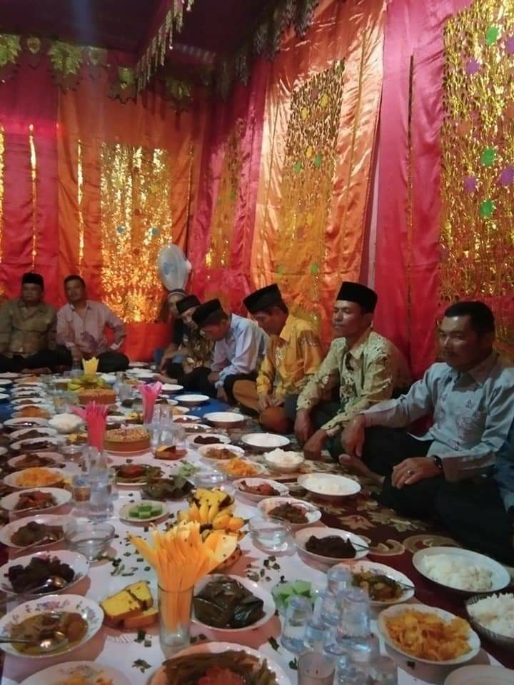
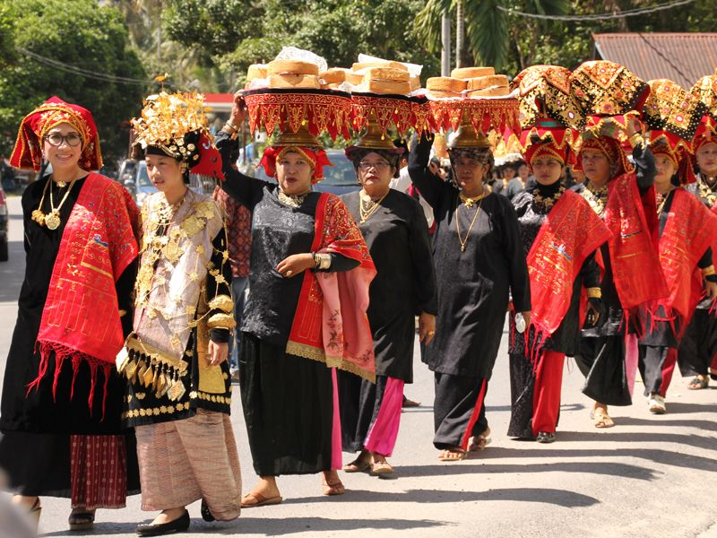
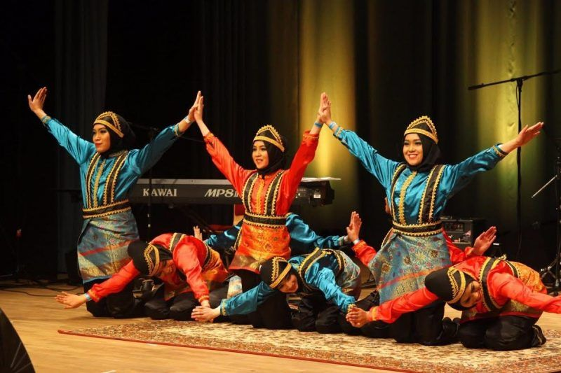
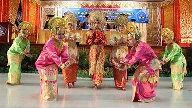

Baralek Gadang

Baralek gadang merupakan tradisi pesta adat pernikahan terbesar dalam budaya Alam Minangkabau yang melibatkan keluarga besar, ninik mamak, tetua adat, dan masyarakat sebagai simbol kehormatan, kebersamaan, serta martabat keluarga. Prosesi ini tidak hanya sebagai perayaan pernikahan, tetapi juga sebagai bentuk penghormatan terhadap adat dan sistem kekerabatan matrilineal Minangkabau, di mana keluarga dan para mamak berperan penting dalam persiapan melalui musyawarah untuk menentukan adat yang digunakan serta pembagian tanggung jawab. Rangkaian acaranya dimulai dari maminang, batunangan, manjapuik marapulai, arak-arakan, hingga basandiang sebagai puncak acara saat pengantin duduk di pelaminan adat, yang diiringi kesenian tradisional seperti talempong, tari piring, dan dendang sebagai wujud kebanggaan budaya. Dengan nilai yang sarat makna religius, sosial, dan filosofi kehidupan, baralek gadang menjadi identitas masyarakat Minangkabau yang menjunjung tinggi adat, syarak, dan solidaritas sosial.


Tari Piring

Tari Piring adalah salah satu tarian tradisional paling terkenal dari Minangkabau, Sumatera Barat, yang ditampilkan menggunakan dua piring sebagai properti utama di kedua telapak tangan penari. Gerakan tari ini sangat dinamis dan energik, memadukan pola gerak cepat, langkah kaki lincah, serta putaran tubuh sambil menjaga piring agar tidak jatuh. Dalam sejarahnya, tari piring awalnya merupakan bentuk rasa syukur masyarakat atas hasil panen yang melimpah, di mana gerakannya menyerupai ritual persembahan kepada alam dan Sang Pencipta. Seiring perkembangan budaya, tari piring menjadi tarian pertunjukan yang dibawakan dalam berbagai acara adat, pernikahan, penyambutan tamu, dan festival budaya. Keunikan tari ini terlihat pada keterampilan penari menjaga keseimbangan piring serta gerakan menghentakkan piring ke lantai pada akhir pertunjukan tanpa memecah ritme musik. Musik pengiring biasanya menggunakan alat tradisional seperti talempong dan gandang, menciptakan suasana meriah dan penuh semangat. Secara keseluruhan, tari piring bukan hanya hiburan, tetapi juga cerminan ketangguhan, kerja keras, rasa syukur, dan identitas budaya Minangkabau.


Tari Indang

Tari Indang adalah tarian tradisional Minangkabau yang berkembang di daerah Pariaman, Sumatera Barat, dan memiliki nuansa religius karena berakar dari tradisi dikia atau kegiatan berdzikir sebagai bagian dari penyebaran Islam. Tari ini dibawakan oleh para penari yang duduk berbaris sambil menggerakkan tubuh secara serempak dengan hentakan tangan dan irama vokal, menunjukkan kekompakan dan kedisiplinan sebagai nilai utama. Musik pengiring biasanya berupa tepukan serta alat pukul seperti rapa’i, yang menciptakan suasana energik dan penuh spiritual. Kostum penari umumnya sederhana dan seragam untuk mencerminkan kesopanan. Tari Indang dipentaskan dalam acara adat, perayaan keagamaan, penyambutan tamu, hingga festival budaya sebagai simbol perpaduan tradisi Minangkabau dan ajaran Islam.


Rumah Gadang

Rumah Gadang adalah rumah tradisional khas Minangkabau, Sumatera Barat, yang mencerminkan sistem kekerabatan matrilineal di mana garis keturunan dan warisan diturunkan melalui pihak ibu. Rumah ini memiliki atap yang melengkung menyerupai tanduk kerbau, simbol kekuatan dan keberanian, serta dihiasi ukiran kayu yang rumit dengan motif flora dan fauna yang kaya makna filosofis. Struktur rumah gadang terdiri dari beberapa bagian penting seperti ruang tamu (ruang utama), kamar tidur, dan dapur, yang dirancang untuk menampung keluarga besar. Selain sebagai tempat tinggal, rumah gadang juga berfungsi sebagai pusat kegiatan sosial dan adat, tempat diadakannya musyawarah keluarga, upacara adat, dan perayaan penting lainnya. Keunikan arsitektur rumah gadang tidak hanya terletak pada bentuk fisiknya, tetapi juga pada nilai-nilai budaya yang terkandung di dalamnya, menjadikannya simbol identitas dan kebanggaan masyarakat Minangkabau.


Tari Pasambahan
Tari Pasambahan adalah tarian tradisional Minangkabau yang digunakan sebagai bentuk penghormatan dan penyambutan tamu kehormatan dalam acara adat maupun upacara resmi. Gerakannya lembut dan penuh sopan santun, menggambarkan kerendahan hati serta penghargaan kepada tamu yang datang. Penari biasanya membawa carano atau nampan berisi sirih sebagai simbol penerimaan dan penghormatan. Musik pengiringnya bernuansa lembut dengan dendang khas Minang, sehingga menciptakan suasana khidmat dan hangat. Secara makna, Tari Pasambahan mencerminkan karakter masyarakat Minangkabau yang menjunjung tinggi tata krama, adat, dan penghormatan terhadap sesama.
